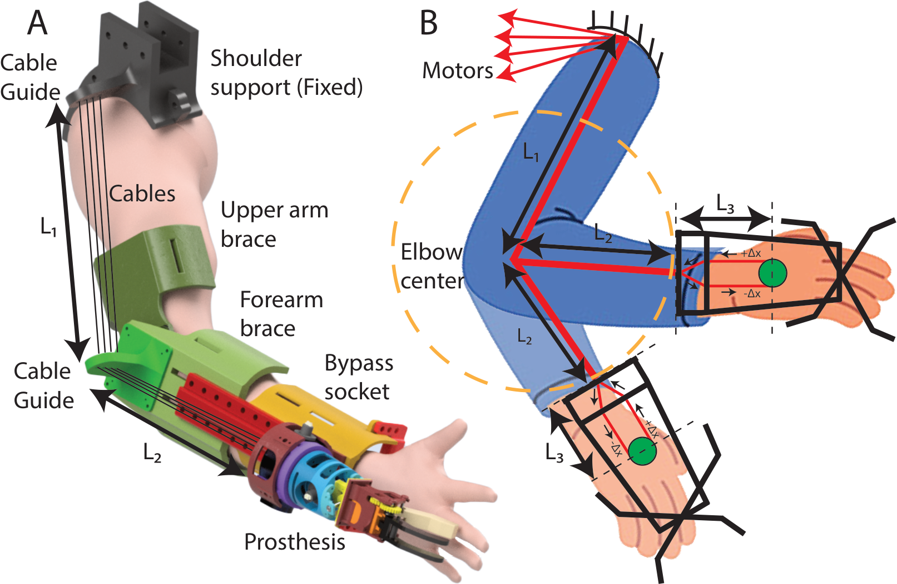
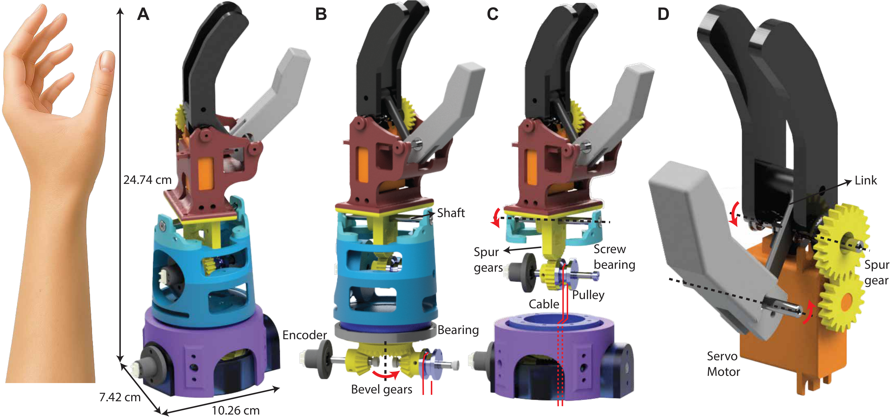
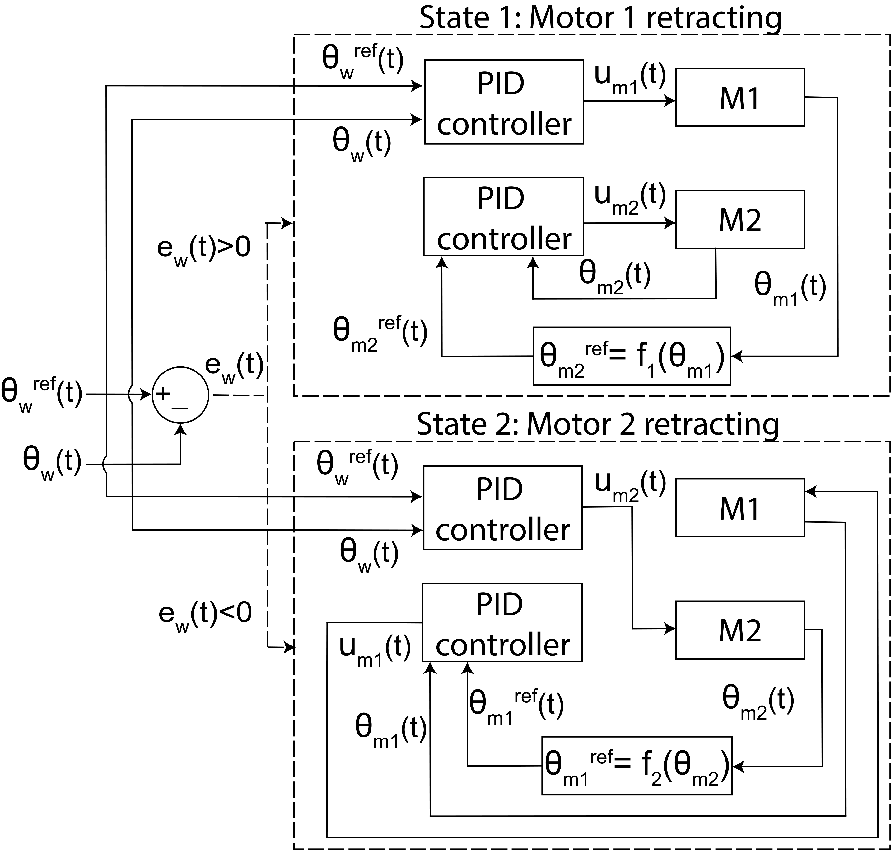
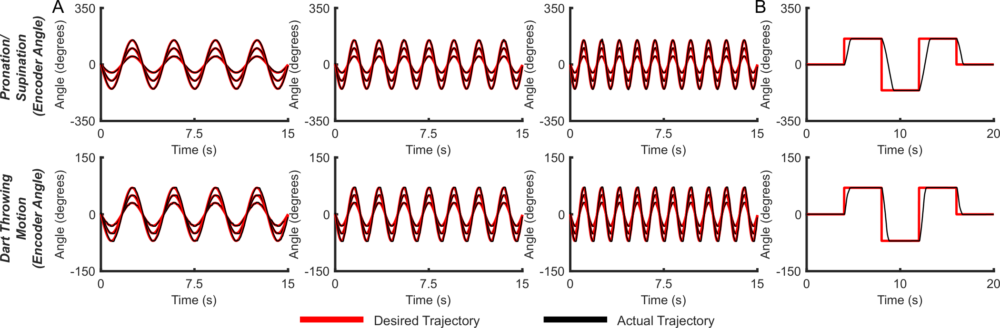
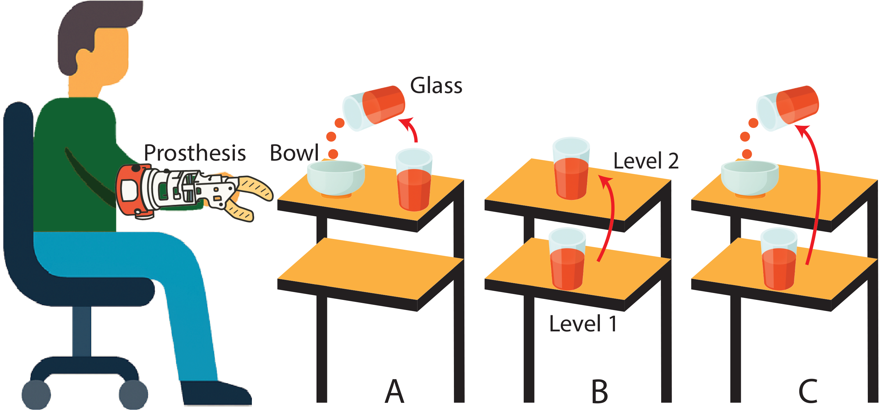
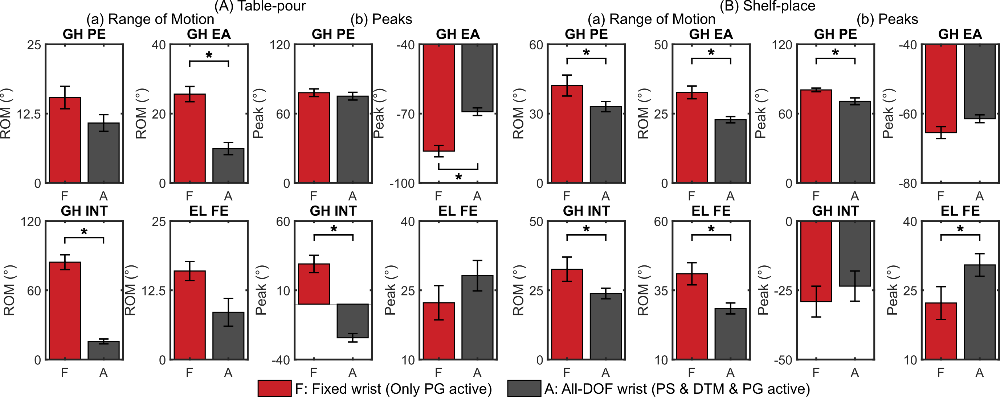
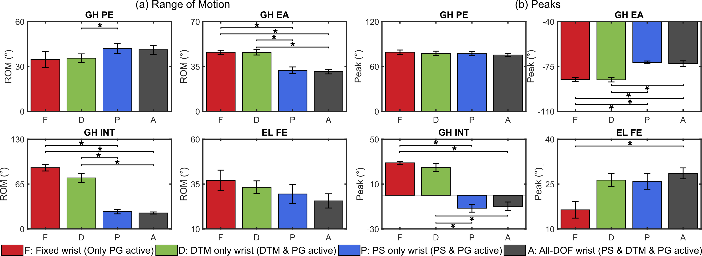

University at Buffalo, USA · Prosthetics · Cable-Driven Robotics · Human-Centered Design
Robotic Prosthesis Emulator for User-Driven Design of Multi-DOF Transradial Prostheses
Affiliation: University at Buffalo, USA
I-PEDLE is a configurable robotic transradial prosthesis emulator built to study how wrist degrees of freedom, control strategy, and device design affect functional upper-limb movement.
Project overview
Highly functional upper-limb prostheses can restore dexterous motion, but adding more powered wrist functions often increases device weight, control complexity, and cost.
This project addressed the need for a configurable robotic emulator that can evaluate prosthetic wrist design choices before committing to a final device design.
My contribution
- Contributed to the mechanical design, fabrication, and validation of the I-PEDLE robotic prosthesis emulator.
- Supported cable-driven actuation architecture with off-board motors to keep the on-limb prosthetic module lightweight.
- Worked on experimental evaluation using trajectory tracking, multi-step response tests, and functional daily living tasks.
- Analyzed upper-limb kinematics to understand how different wrist configurations affected compensatory shoulder and elbow movement.
Objectives
- Develop a lightweight multi-DOF transradial prosthesis emulator.
- Enable real-time modulation of wrist configurations.
- Evaluate dynamic tracking performance and response stability.
- Compare fixed and actuated wrist modes during daily living tasks.
- Use parameter sweeps to study how wrist DOFs influence upper-limb coordination.
Results
- The emulator achieved stable trajectory tracking across multiple frequencies and amplitudes, with tracking error remaining within 5% of the reference trajectory range.
- The system showed stable multi-step response without overshoot.
- During daily living tasks, actuated wrist modes reduced several compensatory shoulder motions compared with fixed wrist conditions.
- The parameter sweep showed that adding more wrist DOFs did not automatically reduce compensation for every task, highlighting the importance of task-specific and user-centered prosthesis design.
Tools and methods
Project figures
The figures below summarize the I-PEDLE robotic emulator design, control architecture, experimental tasks, bench-top characterization, and human-subject task results.

Brace and cable-routing design. Upper-arm and forearm braces, fixed shoulder support, cable guides, bypass socket, and prosthesis module used to route off-board actuation cables while preserving consistent cable length during arm movement.

Mechanical design of the prosthesis module. CAD renderings showing the compact 3-DOF emulator and its actuation mechanisms for pronation/supination, dart-throwing motion, and power grasp.

Full system assembly. I-PEDLE setup with off-board motors, load cells, control box, shoulder support, control interface, emergency switch, arm braces, and the lightweight on-limb prosthesis module.

Control architecture. PID-based position control for antagonistic cable-driven motors, where the wrist-position error selects the driving motor and the opposing motor follows a model-based reference.

Bench-top characterization. Desired and actual encoder trajectories for pronation/supination and dart-throwing motion during sinusoidal tracking and multi-step response testing.

Daily-living task design. Table-Pour, Shelf-Place, and Shelf-Pour tasks used to evaluate how different wrist configurations affect functional manipulation and upper-limb compensation.

Fixed vs. all-DOF wrist results. Range-of-motion and peak-angle comparisons during Table-Pour and Shelf-Place tasks, showing reductions in several compensatory shoulder and elbow movements with the actuated wrist.

Wrist-configuration parameter sweep. Shelf-Pour results comparing fixed, DTM-only, PS-only, and all-DOF wrist modes, highlighting that prosthetic wrist benefits are task-specific and not simply proportional to the number of active DOFs.
These figures are intended for your personal academic portfolio. Use only figures you have permission to share publicly.